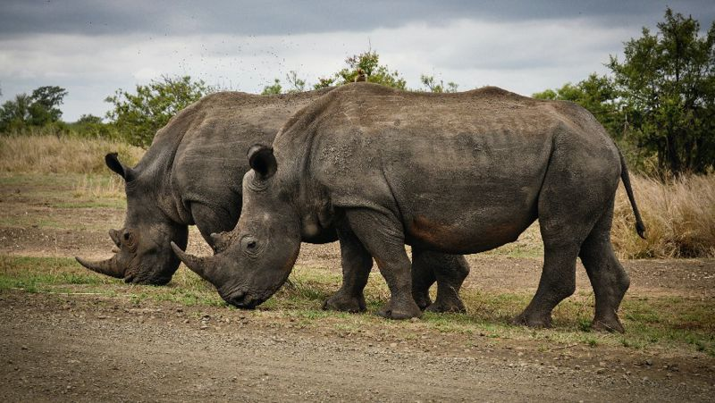
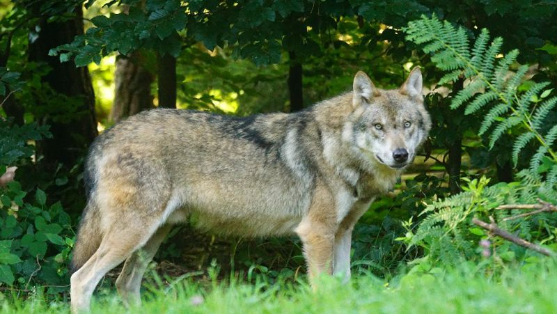
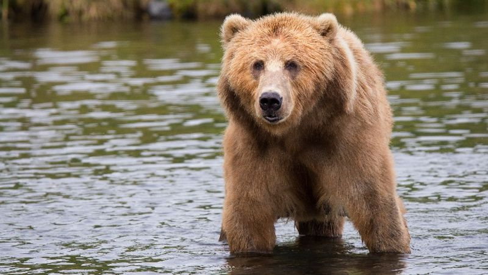
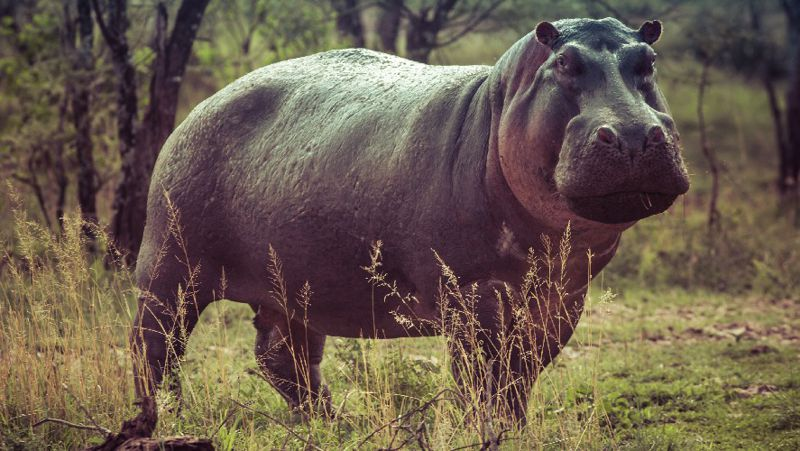
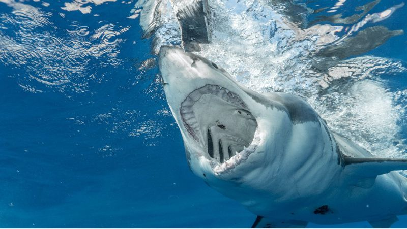

Носорог
Носорога называют одним из самых опасных животных в мире.
Он имеет длинный и острый рог. Взрослый самец черного носорога может достигать веса в три тонны. Задавить своей массой противника ему ничего не стоит. Так, жертвами носорогов становятся нескольких десятков человек в год.
Волк

Эти хищники обитают на всей территории Евразии, а также Северной Америки. Волк, безусловно, опасное и хищное животное для человека. Опасность заключается не только в том, что он может загрызть человека, но и в том, что волки могут быть переносчиками бешенства
Волки нападают на человека, если у них ограничены ресурсы пищи. Либо в связи с ростом их численности. Или когда животное заражено бешенством.
Имея огромные клыки и когти, волк нападает на крупных животных, таких как лоси, олени, лошади, коровы. В еде предпочтение отдает млекопитающим средних размеров и птице.
Медведь

В мире насчитывается восемь видов этого огромного хищного животного. Медведи обитают на всех континентах земного шара — в Азии, Южной и Северной Америке, Европе
Самыми свирепыми из всех видов считаются бурый и полярные медведи. В основном медведи всеядные, чего не скажешь о полярных представителях млекопитающих. Они едят всех животных и даже могут напасть на человека. Медведь развивает скорость 60 км/час, поэтому бежать от него бесполезно.
Бегемот

Бегемот с виду ленивое и безобидное животное. Однако в истории немало случаев нападения на людей.
Огромное животное переворачивает лодки, а пассажиров запросто задавит своей тушей. Бегемот нападает на людей без особой причины. Нередко в пасть бегемота попадают антилопы и крокодилы.
Белая акула

Акула обитает во всех океанах, а также в Средиземном и Японских морях. Именно этот вид акул считается самым опасным и кровожадным. Размеры хищника могут достигать 12 метров в длину.
Если вы окажетесь на берегу океана, будьте начеку. Белых акул еще называют акулы-людоеды. В меню белой акулы могут входить тюлени, дельфины и мелкие киты, а также другие морские гады. Конечно, человечина в ее рационе – это лакомый кусок, акула чует кровь человека на огромном расстоянии.
Белые акулы находятся на грани исчезновения, их осталось порядка 3500 особей.